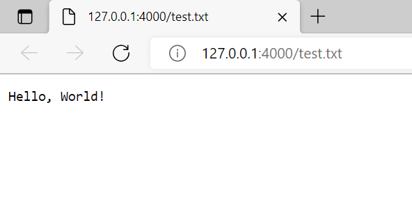

THE BASICS
Express.js is like any other Node.js module; it can be installed at the command-line with npm install. Before you do this, however, it pays to set up a project directory so that dependencies are easier to manage and npm doesn't give you a hard time.
To begin, open up your terminal and navigate to a suitable place to keep your projects.
Then create a directory for your Express.js application:
$ md your-project
$ cd your-project
You can call your project whatever you want, provided it matches any naming scheme you prefer.
Once the directory is ready, initiate a Node.js project with the following:
$ npm init
You will be asked a series of questions regarding naming and versioning, test scripts, etc.
Leave every option blank, except the Author and Description options. If all goes well,
you should have a new project with a package.json file containing basic information. The
default entry point will be index.js, but there is nothing besides the package.json
file in your project directory, so go ahead and make index.js with your favourite text editor.
Leave it blank for now.
Now, we can install Express.js as a dependency. Go back to your terminal and run the following:
$ npm install express
If your connection is good and you don't have any bad network settings, you should see a list of npm
output and finally a statement of package status. Now Express.js is listed in our package.json and
exists under a new node_modules directory in your project. Now you can open up the index.js
file you made earlier and add the following content to it:
const express = require('express');
const PORT = 4000;
const app = express();
app.use(express.static('./public'));
app.get('/', (req, res) => {
res.send('Add "home.html" on end of URL.');
});
app.listen(PORT, () => {
console.log(`Server running on port ${PORT}`);
});
The first line of this program requires the express module from the dependencies of the project. Once it is declared, we use it to set up a server app (const app = express()) and tell that app to serve static files from a specific directory with the express.static() middleware function. It is common practice to serve static files from a public folder, so that you can easily tell what will be publicly available from your site.
The best kind of static file to serve is an HTML file, as HTML is ultimately what makes every web page... a web page. But this guide assumes that you don't have an IDE that can auto-generate an HTML template for you (an IDE that can do that is Visual Studio Code), so we'll start with plaintext for now. Later on, if you like, you can copy the pages this website uses and dump them in your public folder - That's entirely plausible, because this website is MIT Licensed.
Create a folder named public in your project directory so that Express knows what directory you mean in line 6 above. In this folder, create a file called 'test.txt', and write "Hello World!" in it. Save it, then open up a terminal in your project directory and enter the following to start up your server:
$ node index.js
If nothing breaks, and there aren't any mistakes in the files you created, the terminal should print the following:
Server running on port 4000
Now open up a web browser (whichever one you like) and enter the following address in the address bar:
http://127.0.0.1:4000/test.txt
If all goes well, you should see output similar to the following screenshot:

If you can see this - Congratulations! You've successfully set up a web server!
Now, there's much more you can do with this framework than just say "Hello World!" As noted on the Home Page, you can add an underlying MongoDB database instance with the Mongoose ORM framework on top of it, turning your site into the backend for a full-fledged web application. The tutorial for that is not covered here; however, one is given in the External Links of this site's landing page. Go ahead and read that if you're interested.
Created 2022 | This entire website is MIT Licensed!